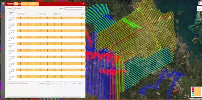
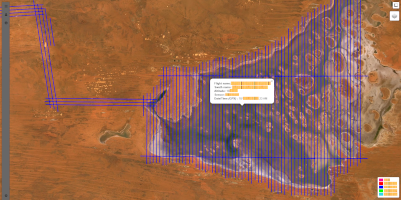

Mostly Facebook for people pretending that their job makes a difference. I'm not judging, I'm on there too. It works, I'm not happy about it, but it works.
Some fo the stuff I like to work on outside of work
With the exception of some fairly basic scripting/automation, this was the first actual project I ever really took on, and boy oh boy, did I hugely underestimate the complexity of this seemingly simple task. When beginning this project I had the idea that I could use a pre-existing script that I had written in Python to turn raw flight log data into a KML that would visually display the logged data, including flight line run numbers, altitude etc. Then, I would show this data on a map in a web interface that could filter/search different days, aircraft and LiDAR sensors. It was mostly just a little database and text parsing, should be easy enough, right? Lol. I had little idea of what I was getting myself into. But holy moly, I learned a lot!!  I made my very first post to StackOverflow – https://stackoverflow.com/questions/54319492/mapping-project-i-want-to-show-kml-files-on-a-map-and-be-able-to-sort-them-bas/54327412#54327412 and I awaited advice from the programming gods to point me in the right direction. A MASSIVE shout out to user https://stackoverflow.com/users/1892308/istopopoki who took the time to write a very informative post and gave some ‘getting started’ advice. The post had one key piece of text that kept me glued to my computer whilst I learned what I needed to to make this work. Link
Mostly Facebook for people pretending that their job makes a difference. I'm not judging, I'm on there too. It works, I'm not happy about it, but it works.
Unfortuntely, most of this is crap as anything decent I have coded in the last 24 months mostly has IP owned by someone other than I. Sigh.
I don't use it a whole lot anymore as I'm concerned about the amount of soul-stealing going on. But I hate that I still love it.